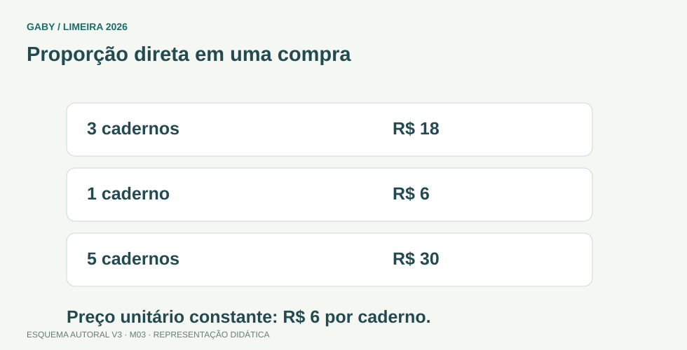

Como acompanhar esta aula
Comece pelos desenhos e pelos exemplos. Depois leia a fórmula e explique cada passo com suas palavras. Os esquemas visuais originais continuam disponíveis; as correções agora explicam as etapas.
Revisão didática para iniciantes. Questões autorais do projeto [Gaby], com duas correções editoriais de alternativas nos módulos M05 e M07. Não constitui nova auditoria do edital.
Objetivos do módulo
- Montar razões e proporções.
- Identificar proporcionalidade direta e inversa.
- Resolver regra de três simples e composta.
Proporção direta em uma compra

Descrição em texto do esquema
- 3 cadernos: R$ 18
- 1 caderno: R$ 6
- 5 cadernos: R$ 30
Oficina visual · aplique o esquema
Quatro servidores concluem uma tarefa em 6 horas. Com produtividade igual, quanto tempo levariam oito servidores?
Atividade autoral complementar da V3. Registre sua resposta; a resolução está no arquivo de gabarito e revisão.
Mapa do conteúdo
1. Razão: comparar mantendo a ordem
Uma razão é uma comparação por divisão; uma proporção é a igualdade entre duas razões. Confira as unidades antes de comparar.
Entenda cada passo
- 15 para 20 → 15:20
- Divida os dois por 5 → 3:4
- 3 cadernos por R$ 24 → cada um custa 24 ÷ 3 = R$ 8
- 5 ao mesmo preço → 5 × 8 = R$ 40
2. Direta ou inversa: imagine dobrar
Ao mesmo preço unitário, dobrar a quantidade dobra o preço: relação direta. No mesmo serviço, dobrar pessoas igualmente produtivas reduz o tempo à metade: inversa.
Entenda cada passo
- 6 pessoas × 10 dias → 60 pessoas-dia
- 12 pessoas para o mesmo serviço → 60 ÷ 12 = 5 dias
- Receita para 4 pessoas: 300 g → por pessoa 300 ÷ 4 = 75 g
- Para 10 pessoas → 75 × 10 = 750 g
3. Mais grandezas: uma mudança por vez
Na regra de três composta, explique separadamente o efeito de cada mudança. Só depois combine os fatores.
Entenda cada passo
- 2 máquinas fazem 100 peças em 5 h
- 4 máquinas iguais em 5 h → dobram: 200 peças
- 4 máquinas em 10 h → dobram outra vez: 400 peças
- Conta conjunta → 100 × (4 ÷ 2) × (10 ÷ 5) = 400
Fórmula em duas formas: proporção
Em linha: a ÷ b = c ÷ d; a e c são numeradores, b e d denominadores não nulos
As duas escritas descrevem a mesma conta. Use o formato que ajudar a entender cada operação.
Sua vez: tente antes de abrir
Se 4 canetas custam R$ 12, quanto custam 7 ao mesmo preço unitário?
Conferir o raciocínio da atividade
- Uma caneta custa 12 ÷ 4 = R$ 3.
- Sete custam 7 × 3.
- Total R$ 21; a relação é direta.
Refaça no papel. Se errou, descubra em qual passo antes de seguir para as dez questões.
Pegadinhas e erros frequentes
- Não alinhar unidades.
- Inverter razão sem analisar direta/inversa.
- Confundir razão com diferença.
Resumo depois de entender os exemplos
- a/b = c/d → a × d = b × c, com b e d não nulos
- direta: razão constante; inversa: produto constante
- produção = produção inicial × fator de máquinas × fator de tempo
Exercícios do módulo
Tente primeiro sem consulta. Depois use “Ver resposta e resolução” abaixo da questão; clique novamente para recolher. O gabarito separado continua disponível.
Resolva sem consultar o arquivo de gabarito. As questões são autorais e construídas para treinar os conceitos do edital.
- R$40
- R$32
- R$29
- R$120
Fonte: IMPA/OBMEP — Portal da Matemática, módulos.
Ver resposta e resolução — questão 1
Resposta: alternativa A
Leia o pedido e acompanhe o raciocínio:
- Um caderno custa 24 ÷ 3 = R$ 8.
- Cinco custam 5 × 8 = R$ 40.
- Mais cadernos ao mesmo preço unitário implicam maior total.
Confira: refaça a operação final, verifique as unidades e compare com o que foi pedido.
- 10
- 5
- 60
- 20
Fonte: IMPA/OBMEP — Portal da Matemática, módulos.
Ver resposta e resolução — questão 2
Resposta: alternativa B
Leia o pedido e acompanhe o raciocínio:
- Mesmo serviço e produtividade: relação inversa.
- 6 × 10 = 60 pessoas-dia.
- 60 ÷ 12 = 5 dias, metade do tempo.
Confira: refaça a operação final, verifique as unidades e compare com o que foi pedido.
- 5:4
- 1:5
- 3:4
- 4:3
Fonte: IMPA/OBMEP — Portal da Matemática, módulos.
Ver resposta e resolução — questão 3
Resposta: alternativa C
Leia o pedido e acompanhe o raciocínio:
- Preserve a ordem 15 para 20.
- Divida os dois por 5.
- 15:20 = 3:4; inverter mudaria a comparação.
Confira: refaça a operação final, verifique as unidades e compare com o que foi pedido.
- a=d
- a+c=b+d
- ad=bc
- ab=cd sempre
Fonte: IMPA/OBMEP — Portal da Matemática, módulos.
Ver resposta e resolução — questão 4
Resposta: alternativa C
Leia o pedido e acompanhe o raciocínio:
- Parta de a/b = c/d, com b e d não nulos.
- Multiplique ambos os lados por b × d.
- Cancelando denominadores, a × d = b × c.
Confira: refaça a operação final, verifique as unidades e compare com o que foi pedido.
- maior
- menor
- igual necessariamente
- zero
Fonte: IMPA/OBMEP — Portal da Matemática, módulos.
Ver resposta e resolução — questão 5
Resposta: alternativa B
Leia o pedido e acompanhe o raciocínio:
- Tempo = distância ÷ velocidade.
- A distância é a mesma; aumentar o divisor diminui o tempo.
- 100 km a 50 km/h levam 2 h; a 100 km/h levam 1 h.
Confira: refaça a operação final, verifique as unidades e compare com o que foi pedido.
- 75
- 0,75
- 15
- 7,50
Fonte: IMPA/OBMEP — Portal da Matemática, módulos.
Ver resposta e resolução — questão 6
Resposta: alternativa D
Leia o pedido e acompanhe o raciocínio:
- R$ 75 é o preço de dez unidades.
- Preço de uma: 75 ÷ 10 = R$ 7,50.
- Confira: 10 × 7,50 = 75.
Confira: refaça a operação final, verifique as unidades e compare com o que foi pedido.
- 120g
- 3000g
- 750g
- 600g
Fonte: IMPA/OBMEP — Portal da Matemática, módulos.
Ver resposta e resolução — questão 7
Resposta: alternativa C
Leia o pedido e acompanhe o raciocínio:
- Por pessoa: 300 ÷ 4 = 75 g.
- Para 10 pessoas: 75 × 10 = 750 g.
- Mais pessoas, mantendo a porção, exigem mais ingredientes.
Confira: refaça a operação final, verifique as unidades e compare com o que foi pedido.
- escolher MMC
- multiplicar cruzado sem ler
- identificar grandezas e unidades
- somar todos os números
Fonte: IMPA/OBMEP — Portal da Matemática, módulos.
Ver resposta e resolução — questão 8
Resposta: alternativa C
Leia o pedido e acompanhe o raciocínio:
- Identifique o que cada número mede e as unidades.
- Determine se a relação é direta ou inversa.
- Depois monte a proporção; multiplicar sem interpretar pode inverter a conta.
Confira: refaça a operação final, verifique as unidades e compare com o que foi pedido.
- 16h
- 8h
- 4h
- 2h
Fonte: IMPA/OBMEP — Portal da Matemática, módulos.
Ver resposta e resolução — questão 9
Resposta: alternativa C
Leia o pedido e acompanhe o raciocínio:
- Mesmo tanque e torneiras iguais: relação inversa.
- Dobrar de 5 para 10 reduz o tempo à metade.
- 8 ÷ 2 = 4 h; confira 5 × 8 = 10 × 4.
Confira: refaça a operação final, verifique as unidades e compare com o que foi pedido.
- 100 no desenho=1 na realidade apenas
- 1%=100%
- razão sem unidade
- 1 unidade no desenho =100 na realidade
Fonte: IMPA/OBMEP — Portal da Matemática, módulos.
Ver resposta e resolução — questão 10
Resposta: alternativa D
Leia o pedido e acompanhe o raciocínio:
- Escala compara desenho e realidade na mesma unidade.
- 1:100 significa 1 unidade no desenho para 100 reais.
- 1 cm representa 100 cm = 1 m, não o contrário.
Confira: refaça a operação final, verifique as unidades e compare com o que foi pedido.
Quando terminar, abra Matemática 03 - Razão, Proporção e Regra de Três - Gabarito e Revisão.
Checklist de domínio
- ☐ Montar razões e proporções.
- ☐ Identificar proporcionalidade direta e inversa.
- ☐ Resolver regra de três simples e composta.
Meta do módulo: 80% ou mais nas questões, sem depender de consulta.
Referências e conteúdos auxiliares
- IMPA/OBMEP — Portal da Matemática, módulosVideoaulas, exercícios e materiais por tema. Localize o assunto indicado no roteiro complementar do módulo.
Referências externas de apoio consultadas para a V3 em 27/09/2026. A origem das questões é o material autoral do projeto; estes links não indicam que uma instituição publicou ou validou os exercícios. As páginas externas precisam de internet. Em informática, confira a versão do programa; em legislação, observe o recorte e as regras de atualização do edital.